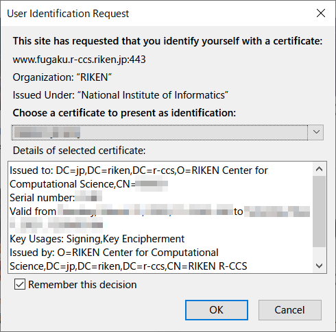

The Fugaku website has been tested on Mozilla Firefox and Google Chrome. If you are using other Web browsers and you have problems with the operation, please use a Web browser which operation has been confirmed. In addition, when using Microsoft Internet Explorer, it is confirmed that abnormal termination occurs with Public key registration.
To prevent vulnerabilities, the Fugaku website prohibits old SSL connections and accepts only TLS 1.2 and TLS 1.3 connections.Depending on the settings of your Web browser, you may not be able to connect, so please change the settings appropriately to use TLS 1.2 or later as follows.
[Setting change direcion on Firefox]
Enter about:config on the address bar and press an enter key.
Search with security.tls.version.
Confirm if [security.tls.version.max] is 4 (Up to TLS 1.3 is available)
If smaller than 4, set 4.
Once the client certificate selection diarogue is shown, select the using lolal account’s client certificate.
The example of Firefox diarogue

The example of Chrome diarogue
In the password input dialog, enter the password of the private key registered when the client certificate was installed. If you’re using macOS Keychain, enter the Keychain password.

{kind=link}
{kind=link}
{kind=link}